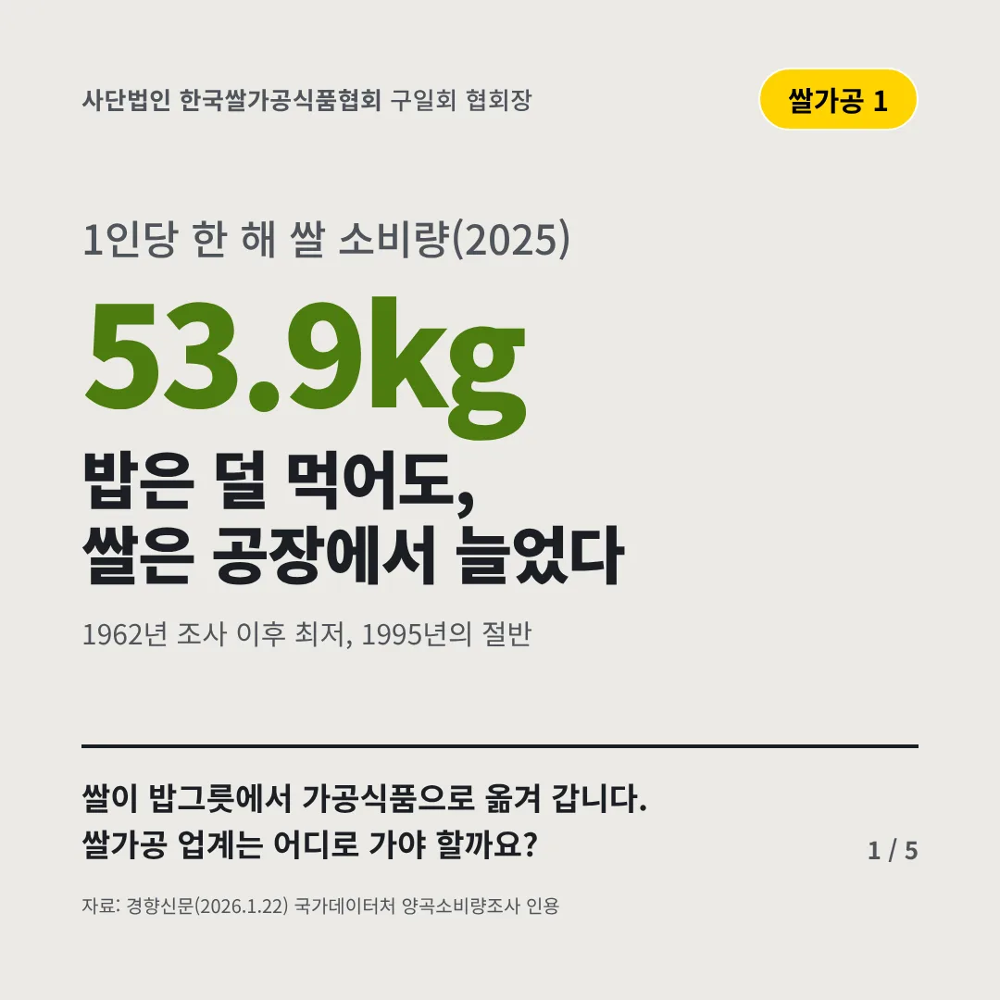
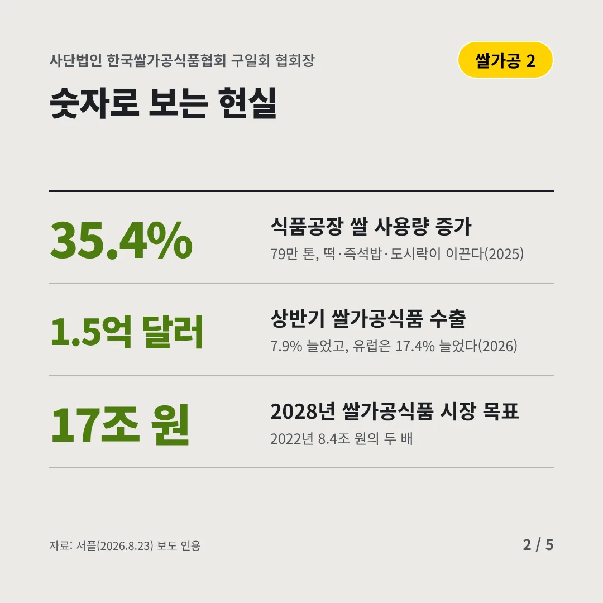
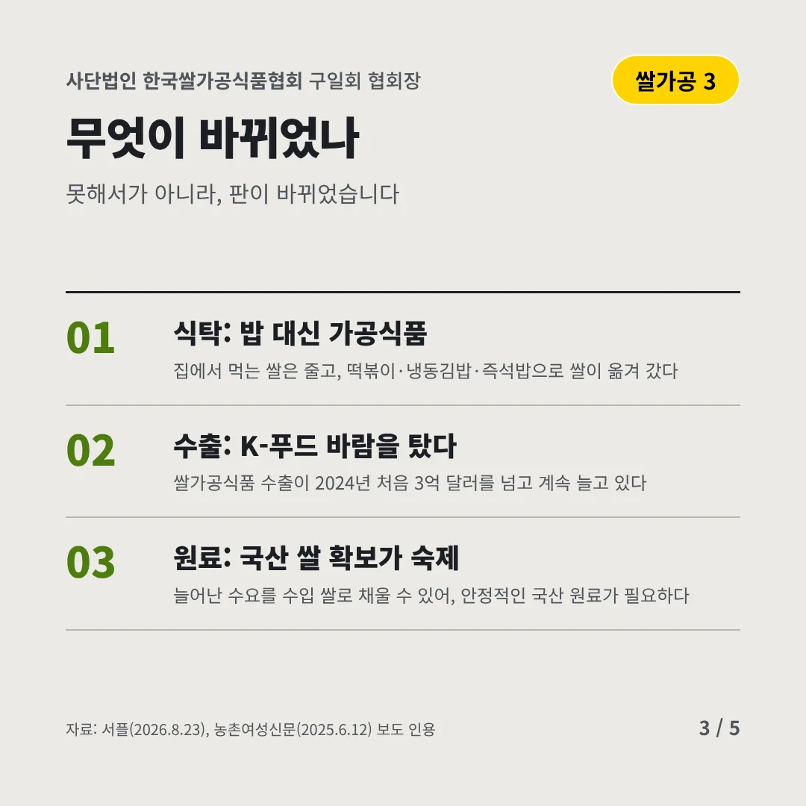
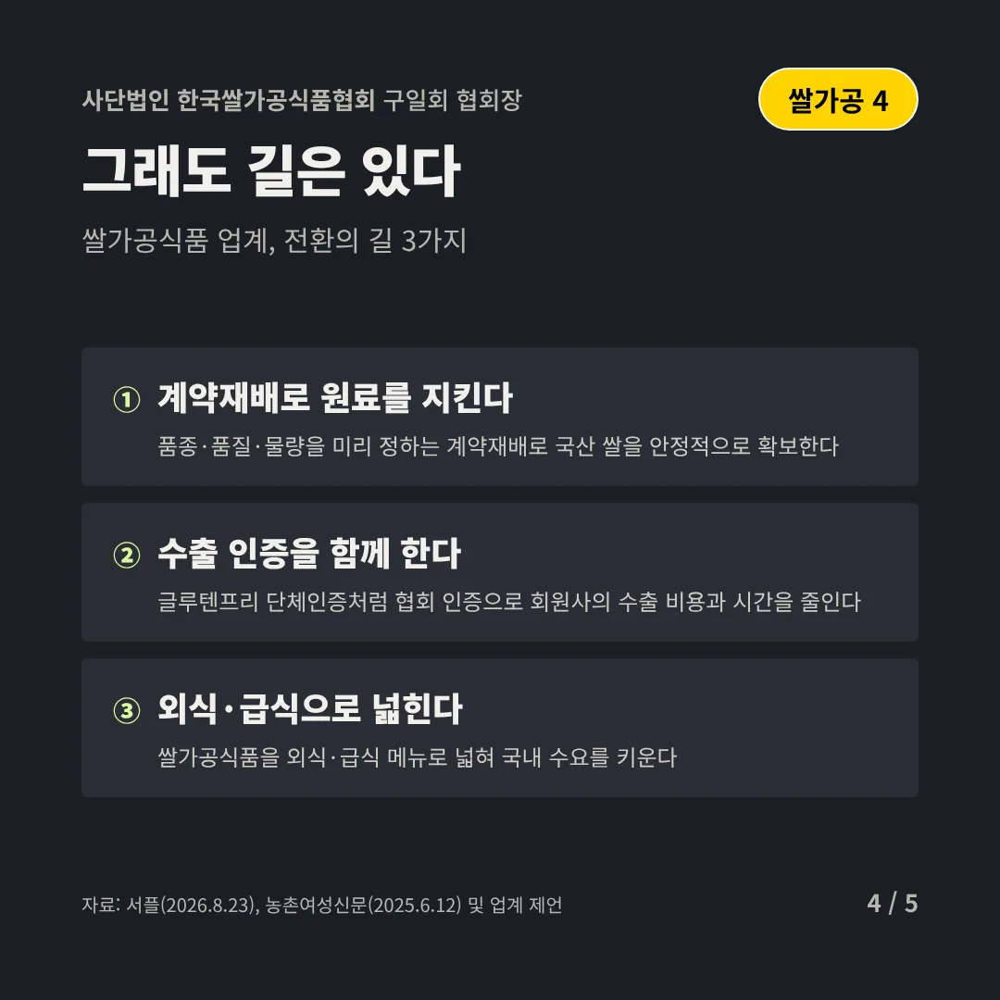
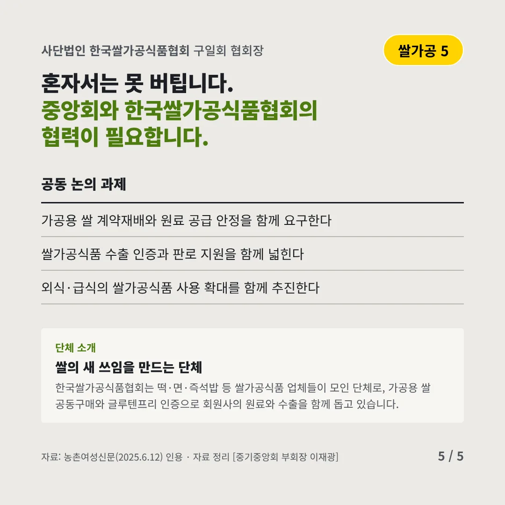
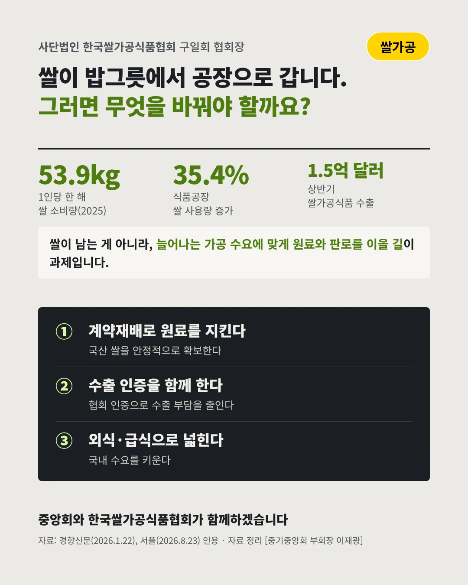

사단법인 한국쌀가공식품협회구일회 협회장
밥은 덜 먹어도, 쌀은 공장에서 늘었다
53.9kg 1인당 한 해 쌀 소비량(2025)






쌀이 밥그릇에서 가공식품으로 옮겨 갑니다. 쌀가공 업계는 어디로 가야 할까요?
숫자로 보는 현실
- 35.4%식품공장 쌀 사용량 증가79만 톤, 떡·즉석밥·도시락이 이끈다(2025)
- 1.5억 달러상반기 쌀가공식품 수출7.9% 늘었고, 유럽은 17.4% 늘었다(2026)
- 17조 원2028년 쌀가공식품 시장 목표2022년 8.4조 원의 두 배
무엇이 바뀌었나
- 식탁: 밥 대신 가공식품집에서 먹는 쌀은 줄고, 떡볶이·냉동김밥·즉석밥으로 쌀이 옮겨 갔다
- 수출: K-푸드 바람을 탔다쌀가공식품 수출이 2024년 처음 3억 달러를 넘고 계속 늘고 있다
- 원료: 국산 쌀 확보가 숙제늘어난 수요를 수입 쌀로 채울 수 있어, 안정적인 국산 원료가 필요하다
그래도 길은 있다
- 계약재배로 원료를 지킨다품종·품질·물량을 미리 정하는 계약재배로 국산 쌀을 안정적으로 확보한다
- 수출 인증을 함께 한다글루텐프리 단체인증처럼 협회 인증으로 회원사의 수출 비용과 시간을 줄인다
- 외식·급식으로 넓힌다쌀가공식품을 외식·급식 메뉴로 넓혀 국내 수요를 키운다
한 장 요약

단체 소개
한국쌀가공식품협회는 떡·면·즉석밥 등 쌀가공식품 업체들이 모인 단체로, 가공용 쌀 공동구매와 글루텐프리 인증으로 회원사의 원료와 수출을 함께 돕고 있습니다.
자료: 경향신문(2026.1.22), 서플(2026.8.23), 농촌여성신문(2025.6.12)